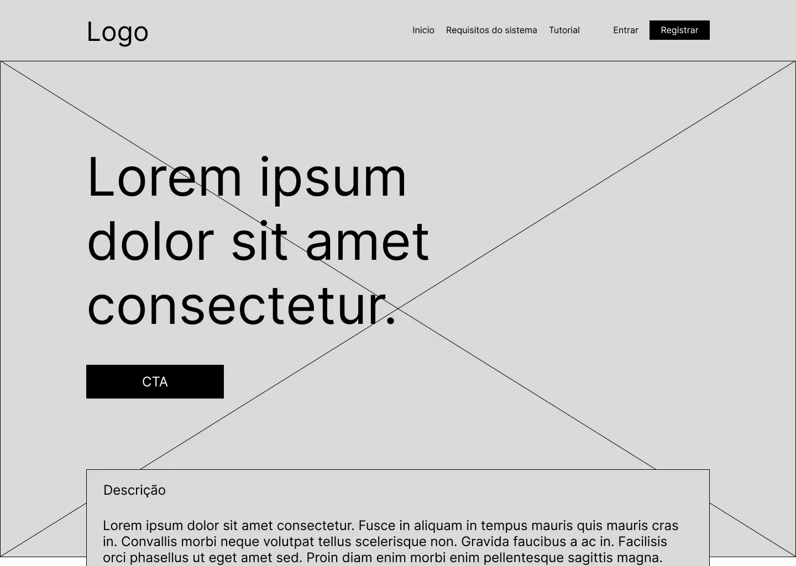
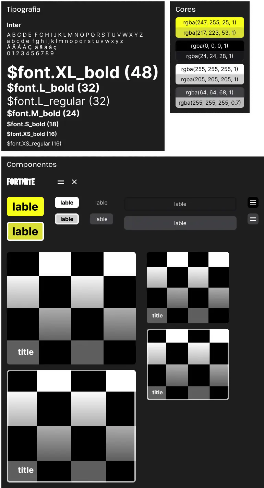
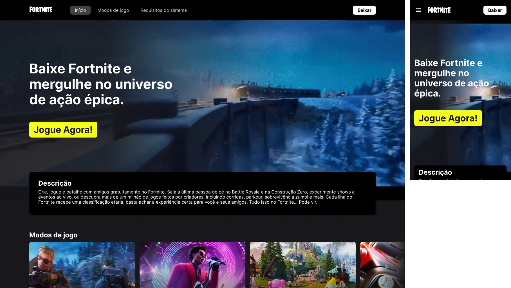

Fortnite
Estudo de caso
webdesign
2024

Esse projeto se trata de um case de estudo desenvolvido para o curso da Coderhouse focado nos processos de desenvolvimento web utilizando HTML e CSS. Como projeto final, foi desenvolvido uma página web responsiva cujo tema foi "Fortnite". Durante o processo, utilizei o figma para criar wireframe, componentes e protótipo simples, assim como apliquei javascript para interações com o usuário.
Pensando em simplificar e modernizar a página web oficial do Fortnite, foi decidido deixar para atrás a estética que até o momento (dezembro de 2023) não condizia com a atual linguagem visual do game. Optamos por usar componentes mais modernos que fazem mais sentido e lembram o que hoje é o padrão dentro do jogo.
Falta de conhecimento da população nos impactos de separar ou não separar resíduos residenciais.
Umas das etapas mais importantes do projeto, foi a criação do wireframe, com base nele foi possivel estruturar os elementos do corpo do site.

Após definido qual estilo visual seria aplicado no projeto, chegou o momento de criar os componentes para futuramente construir um protótipo conciso. Para isso, elementos como botões, foram construídos visando assemelhar-se aos vistos dentro do jogo.

Com base no wireframe e com os componentes finalizados, foi possivel criar um protótipo que consegue materializar todos conceitos idealizados pela a equipe. Nessa etapa também foi necessário criar um protótipo mobile para facilitar o desenvolvimento responsivo.

Para desenvolver o projeto, utilizamos majoritariamente HTML5 e CSS. Também foi necessário aplicar um pouco de javascript para interações simples com o usuário.